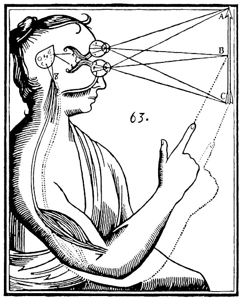
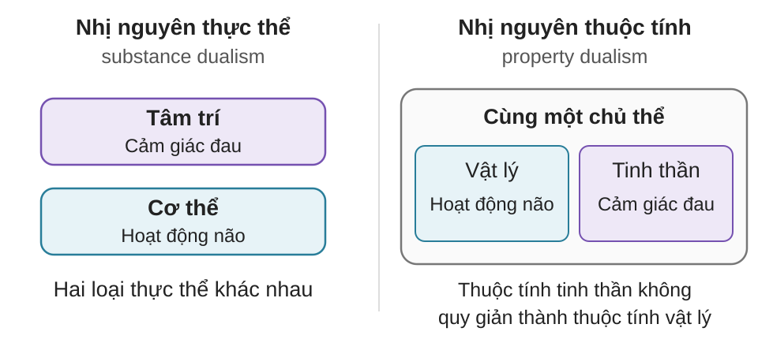
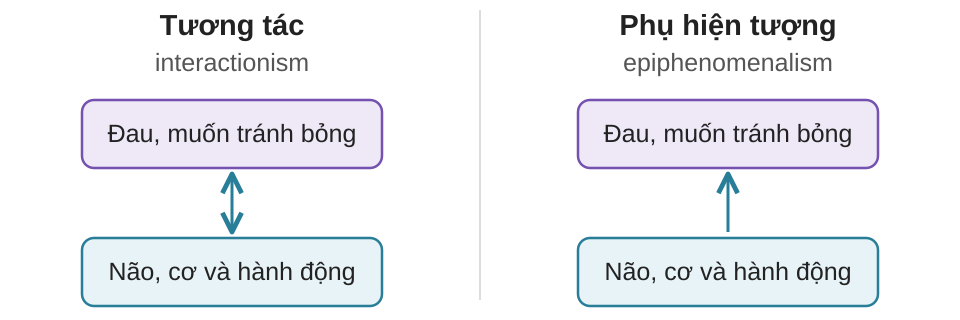
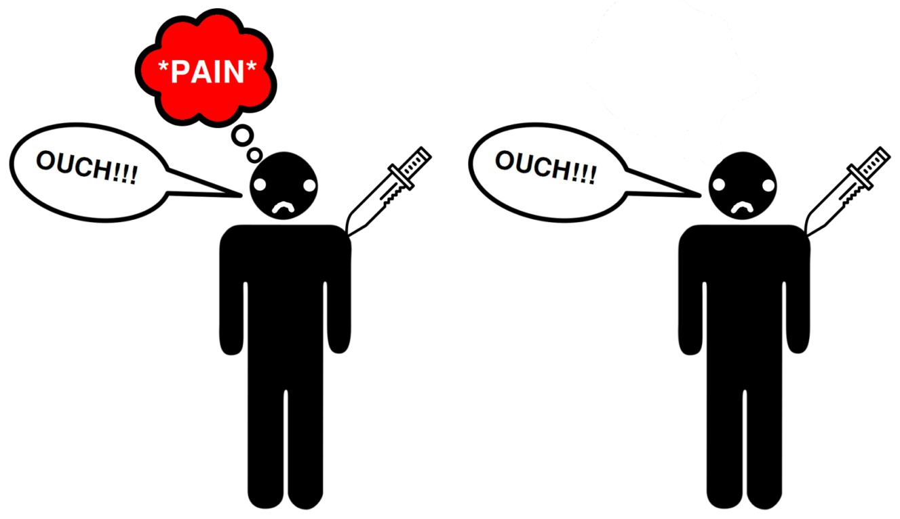
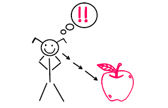
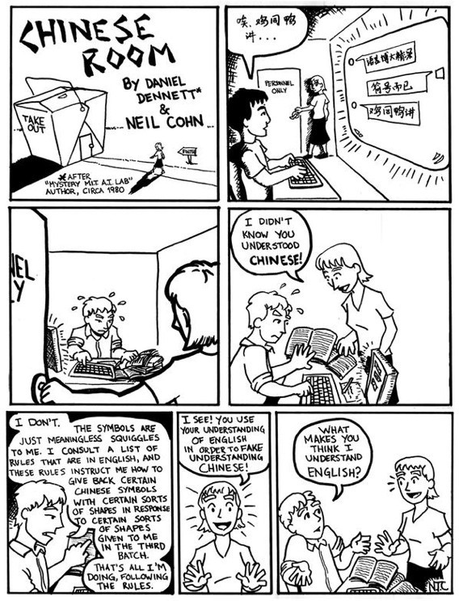
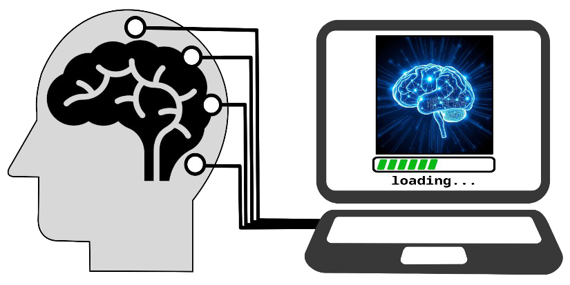

AIT3018 · Học kỳ I, năm học 2026-2027
Viện Trí tuệ nhân tạo · Trường Đại học Công nghệ, ĐHQGHN
Tâm trí là gì?
Ta nhận biết tâm trí khác bằng cách nào?
Kanzi: một cá thể bonobo (tinh tinh lùn).
Lexigram: ký hiệu chỉ đồ vật, hoạt động hoặc địa điểm.
15/15 lượt đến đúng nơi. Người đi cùng không biết đường và vị trí thức ăn.
Việc vượn người dùng lexigram đã được coi là ngôn ngữ chưa, hay mới là giao tiếp bằng ký hiệu? Vì sao?
Từ trải nghiệm hằng ngày đến câu hỏi về tâm trí.
Chuông báo thức reo. Bạn tỉnh dậy, nhớ lịch học
và với tay tắt chuông.
| Não (brain) | Tâm trí (mind) |
|---|---|
| Cơ quan sinh học gồm các tế bào và mạch thần kinh. | Các quá trình và trạng thái như nhận biết, ghi nhớ, suy nghĩ, cảm xúc. |
| Não xử lý tín hiệu âm thanh và điều khiển động tác tắt chuông. | Bạn biết đã đến giờ dậy, nhớ lịch học và muốn ngủ thêm. |
| Khía cạnh | Khi nghe chuông báo thức |
|---|---|
| Ý thức tiếp cận (access consciousness) | Bạn biết đã đến giờ dậy, có thể nói vì sao và quyết định ra khỏi giường. |
| Ý thức hiện tượng (phenomenal consciousness) | Bạn cảm thấy tiếng chuông chói tai và vẫn còn ngái ngủ. |
Nghiên cứu ý thức (consciousness) cần giải thích cả cách ta sử dụng thông tin lẫn trải nghiệm chủ quan của ta.
Bạn cắn một miếng chanh và cảm thấy chua.
Axit kích thích các tế bào vị giác, tạo tín hiệu truyền về não.
Bạn cảm nhận vị chua gắt của miếng chanh.
Qualia là những đặc tính chủ quan của trải nghiệm,
như vị chua bạn cảm nhận khi nếm chanh.
Vì sao quá trình xử lý tín hiệu trong não
lại đi kèm với cảm giác chua?
Trước khi đi học, bạn thấy trời âm u và quyết định mang ô.
| Trạng thái | Điều bạn nghĩ hoặc cảm thấy |
|---|---|
| Niềm tin (belief) | “Lát nữa trời sẽ mưa.” |
| Mong muốn (desire) | “Mình muốn về nhà mà không bị ướt.” |
| Ý định (intention) | “Mình sẽ mang ô theo.” |
| Cảm xúc (emotion) | Bạn lo trời mưa đúng lúc tan học. |
Cảm giác (sensation):
Giác quan tiếp nhận kích thích, như ánh sáng đi vào mắt.
Tri giác (perception):
Ta kết hợp những phần nhìn thấy với kinh nghiệm để nhận ra chiếc cốc.
| Tình huống | Câu hỏi đặt ra |
|---|---|
| Mất ký ức | Nếu mất ký ức, đó còn là cùng một cái tôi không? |
| Phẫu thuật tách bán cầu | Liệu có hình thành hai “cái tôi” không? |
| Rối loạn phân ly danh tính | Đâu là cái tôi “thật”? |
| Sao chép tâm trí vào máy | Nếu tâm trí được sao chép vào máy tính, bản sao ấy có phải là bạn? |
Điều gì khiến một người vẫn là chính họ: ký ức,
cơ thể, sự liên tục hay yếu tố khác?
Tâm trí có tồn tại không?
Tâm trí là gì?
Tâm trí liên hệ với cơ thể và não như thế nào?
Máy móc và động vật có thể có tâm trí không?
Ta dựa vào đâu để biết người khác
đang nghĩ gì, cảm thấy gì?
Con người là gì? Tri thức đến từ đâu?
Plato Khoảng 427-347 TCNBa phần của linh hồn:
Aristotle 384-322 TCN · Học trò của PlatoLinh hồn gắn với các năng lực của sinh vật: sống, cảm nhận, vận động, tư duy.
Cơ thể, cảm xúc và suy nghĩ luôn thay đổi.
Vậy có điều gì ở ta luôn giữ nguyên?
Tự ngã (Atman): bản chất sâu xa của chính mình, đồng nhất với Brahman, thực tại tối hậu.
Giải thoát gắn với việc nhận ra bản chất ấy.
Vô ngã (anatta): con người không có một bản ngã thường hằng, bất biến.
Cảm giác, suy nghĩ và ham muốn sinh khởi, biến đổi theo điều kiện.
Hiểu con người cũng để trả lời câu hỏi: sống thế nào?
| Truyền thống và bối cảnh | Một hướng trả lời |
|---|---|
| Nho giaTrung Hoa · Khổng Tử: 551-479 TCN | Tâm (心, xīn) gắn suy nghĩ, cảm xúc với đạo đức. Tu dưỡng để sống tốt với người khác. |
| Đạo giaTrung Hoa · Văn bản Lão Tử: khoảng thế kỷ 4-3 TCN | Sống thuận theo Đạo (道, Dào), bớt áp đặt và gượng ép. |
| Kitô giáoTừ thế kỷ 1 sau Công nguyên | Linh hồn (soul), đời sống sau cái chết và quan hệ với Thiên Chúa. |
| Hồi giáoTừ thế kỷ 7 sau Công nguyên | Bản thân/linh hồn (نَفْس, nafs), tinh thần (رُوح, rūḥ) và trách nhiệm về hành động. |
Giác quan có thể đánh lừa ta.
Vậy có điều gì ta vẫn có thể biết chắc?
“Tôi tư duy, vậy tôi tồn tại.”
I think, therefore I am.

Nhị nguyên thực thể
(substance dualism):
tâm trí và vật chất khác bản chất.
Tâm trí: thực thể tư duy, phi vật chất.
Cơ thể: có chiều dài, chiều rộng và chiều sâu. Đặc tính này gọi là quảng tính (extension).
Bạn muốn giơ tay, rồi cánh tay cử động. Ý định tác động lên cơ thể bằng cách nào?
Chủ nghĩa kinh nghiệm (empiricism) nhấn mạnh vai trò của kinh nghiệm trong hiểu biết.
| Tác giả | Từ kinh nghiệm, ông lập luận rằng... |
|---|---|
| John Locke1632-1704 · Anh | Ý tưởng đến từ cảm giác và phản tư (reflection), tức quan sát hoạt động tâm trí của chính mình. |
| George Berkeley1685-1753 · Ireland | Vật thể không tồn tại độc lập với tâm trí. Quả táo là tập hợp những gì ta cảm nhận: màu sắc, mùi, vị... |
| David Hume1711-1776 · Scotland | Từ những sự kiện thường đi cùng nhau, ta hình thành thói quen chờ đợi sự kiện này dẫn đến sự kiện kia. |
Bạn thấy quả bóng đập vào cửa kính, rồi kính vỡ.
| Tâm trí góp phần gì? | Trong ví dụ này |
|---|---|
| Không gian và thời gian Các hình thức của trực quan (intuition) | Ta nhận biết các vật ở đâu, sự kiện nào xảy ra trước, sự kiện nào xảy ra sau. |
| Nhân quả (causality) Một phạm trù (category) của giác tính | Ta hiểu sự thay đổi theo quan hệ nguyên nhân và kết quả. |
Hiện tượng (phenomenon): sự vật được nhận biết qua các cấu trúc ấy.
Vật tự thân (thing-in-itself): sự vật xét độc lập với cách ta nhận biết.
| Mốc phát triển | Cách nghiên cứu |
|---|---|
| 1879 · Wilhelm WundtPhòng thí nghiệm tâm lý tại Leipzig, Đức | Đo cảm giác, sự chú ý và thời gian phản ứng trong những điều kiện được kiểm soát. |
| Đầu thế kỷ 20Thuyết hành vi (behaviorism) | Quan sát quan hệ giữa kích thích, hành vi và việc học từ môi trường. |
| Từ thập niên 1950Khoa học nhận thức (cognitive science) | Kết hợp thí nghiệm, nghiên cứu não và mô hình tính toán để giải thích các quá trình tâm trí. |
Cơn đau liên hệ thế nào với hoạt động của não?
Bạn chạm vào cốc nóng, thấy đau và đặt cốc xuống.
Cơ thể và tâm trí là hai loại thực thể khác nhau.
Hoạt động thần kinh thuộc cơ thể; cảm giác đau thuộc tâm trí.
Tâm trí và cơ thể có chung một nền tảng.
Ví dụ: vật lý luận cho rằng cơn đau có cơ sở hoàn toàn vật lý.


Song hành (parallelism):
Tâm trí và cơ thể diễn biến tương ứng, không tác động trực tiếp.
Dịp nhân luận (occasionalism):
Sự phối hợp giữa tâm trí và cơ thể do Thượng đế tạo ra.
Vật lý luận (physicalism): mọi trạng thái tinh thần đều có cơ sở hoàn toàn vật lý.
Cảm giác đau chính là một trạng thái hay quá trình thần kinh.
Cơn đau phụ thuộc hoàn toàn vào vật lý, nhưng các thuộc tính tâm lý không thể quy giản hoàn toàn thành thuộc tính vật lý.
Bạn đặt cốc xuống và lần sau dùng quai để cầm.
Đang đau là có những khuynh hướng như kêu đau, tránh chạm và tìm trợ giúp.
Cơn đau gắn với kích thích, ký ức và mong muốn tránh bỏng, rồi dẫn tới hành động.
Trải nghiệm hình thành từ cách nhiều thành phần của hệ thần kinh tổ chức và tương tác.

Zombie triết học (philosophical zombie): bản sao được giả định giống hệt bạn về vật lý và hành vi, nhưng thiếu trải nghiệm chủ quan.
Cả hai cùng đặt cốc nóng xuống. Theo giả định, chỉ bạn cảm thấy đau.

Trước: chỉ sống trong phòng đen trắng, nhưng biết mọi sự thật vật lý về thị giác màu.
Sau: lần đầu trực tiếp nhìn thấy màu đỏ.
Mary có học được điều gì mới không? Nếu có, đó là điều gì?
Cô có thể có thêm khả năng nhận ra, nhớ hoặc tưởng tượng màu đỏ.
Hoặc tiếp cận điều đã biết theo một cách mới.
Tâm trí và cơ thể có chung một nền tảng. Nền tảng ấy là gì?
| Quan điểm | Cách giải thích |
|---|---|
| Vật lý luận (physicalism) | Trải nghiệm đau thuộc về hoặc phụ thuộc hoàn toàn vào thực tại vật lý. |
| Duy tâm luận (idealism) | Tinh thần là nền tảng; thế giới vật chất phụ thuộc vào tinh thần. |
| Nhất nguyên trung tính (neutral monism) | Cả vật lý lẫn tinh thần bắt nguồn từ một nền tảng không thuần vật lý hay tinh thần. |
Chức năng luận hỏi về vai trò của trạng thái: không mặc định vai trò ấy phải do vật chất thực hiện.
Ta vẫn dùng khái niệm nhiệt độ, đồng thời giải thích nó bằng chuyển động của các phân tử.
Hóa học bỏ giả thuyết về “chất cháy” phlogiston khi có lời giải thích tốt hơn về sự cháy.
Duy vật loại trừ (eliminative materialism): một số khái niệm như “niềm tin”, “mong muốn” có thể cũng cần được thay thế.
Động vật học, nhận biết và giải quyết vấn đề thế nào?
Giả sử chuyển thức ăn ra xa hơn: con vật có chọn que dài hơn để lấy không?
| Ví dụ ở động vật | Ở người, ta còn thấy... |
|---|---|
| Quạ, tinh tinh dùng vật làm công cụ. | Thiết kế công cụ, viết hướng dẫn và cải tiến qua nhiều thế hệ. |
| Kanzi dùng ký hiệu để yêu cầu một việc. | Kể lại quá khứ, bàn về giả thuyết và tranh luận về ý nghĩa. |
Con người có những năng lực hoàn toàn riêng, hay chia sẻ với động vật nhiều hơn ta từng nghĩ?
Máy có thể hiểu, cảm nhận và có cái tôi không?
Giả sử một robot học cách tránh vật nóng:
Chức năng luận (functionalism): xác định trạng thái qua vai trò của nó trong cả hệ thống.
Nếu robot thực hiện đủ vai trò của cơn đau, ta có nên nói nó đau?
Thuyết tính toán về tâm trí
(Computational Theory of Mind, CTM)
Quá trình nhận thức được giải thích bằng các phép tính trên biểu diễn.

AI mạnh (strong AI):
chạy chương trình phù hợp là đủ để có sự hiểu (understanding).
Thảo luận
AI có thể hành xử như có tâm trí. Nhưng nó có thực sự hiểu không?
Chatbot viết: “Tôi buồn vì bạn sắp rời đi.”
Nó dùng từ cảm xúc đúng ngữ cảnh và phản hồi phù hợp với người dùng.
Có thể thử bằng những tình huống trò chuyện mới.
Nó có thực sự cảm thấy buồn khi tạo câu trả lời ấy?
Cần một lý thuyết về ý thức để xác định dấu hiệu cần tìm.
Giả sử một robot xin bạn đừng tắt nó.

Giả sử tâm trí bạn được sao chép sang máy tính
(mind uploading), còn bạn vẫn tiếp tục sống.
Bạn nghe một giai điệu như một trải nghiệm thống nhất.
Trải nghiệm ấy hình thành thế nào?
Các thành phần cơ bản của thực tại đã có yếu tố trải nghiệm.
Chúng kết hợp thế nào để thành trải nghiệm của một người?
Một số quan điểm lấy ý thức của toàn thể làm nền tảng.
Từ đó, làm sao có những người nghe với trải nghiệm riêng?
Phát một đoạn nhạc rất ngắn: người nghe nhận ra giai điệu hay chỉ đoán?
| Dữ liệu | Ta có thể tìm hiểu gì? |
|---|---|
| Lời kể của người nghe | Họ nghe được gì? Họ cảm thấy chắc chắn đến đâu? |
| Hành vi | Trả lời đúng bao nhiêu lần, mất bao lâu, thường nhầm khi nào? |
| Hoạt động não và mô hình AI | Cơ chế nào dự đoán được cả câu trả lời lẫn kiểu nhầm? |
Từ một câu hỏi đến một lập luận có căn cứ.
Mở Quiz cuối buổi 3 trên Canvas.
8 câu hỏi về các khái niệm và quan điểm đã học.